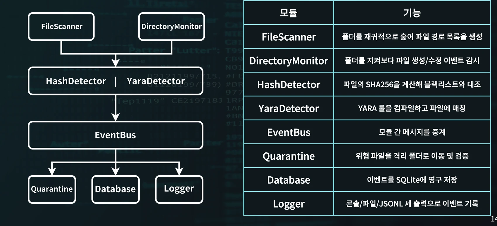
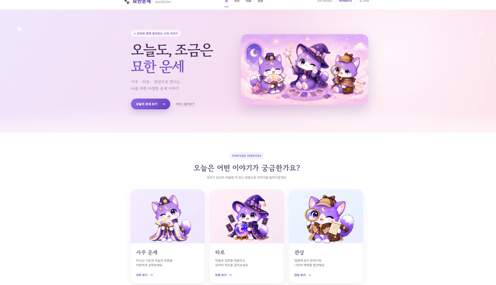

도구 응답에서 데이터베이스의 테이블 목록을 확인했습니다. 추출한 값 중 민감한 부분은 공개본에서 가렸습니다.
모의해킹 포트폴리오
성도윤
클라이언트 개발 경력 2년
취약점의 원인을 추적하고, 확인한 증거로 설명합니다.
클라이언트 개발 실무에서 Unity와 WebView 사이의 통신을 설계하고, 기기별로 발생하는 문제를 해결했습니다. 지금은 웹·시스템 보안 실습에서 취약점의 영향을 확인하고 대응 방안을 보고서로 정리합니다.
경력/BACKGROUND
스윙크 · 클라이언트 개발2024.03 — 2026.03
Unity와 Cocos Creator로 교육용 플랫폼과 HTML5 콘텐츠를 개발했습니다. 공통 기능을 플러그인으로 분리하고 콘텐츠 로딩 방식을 개선했습니다.
소개 · 경력
교육용 플랫폼과 HTML5 콘텐츠를 개발했습니다. 프로젝트별로 맡은 일과 해결한 문제를 정리했습니다.
01 스윙크 · 클라이언트 개발자
2024.03 — 2026.03 말스윙크 · 클라이언트 개발
교육용 플랫폼과 HTML5 인터랙티브 학습 콘텐츠를 개발했습니다. 프로젝트에 따라 Android·iOS·PC·모바일 웹 환경을 다뤘습니다. 아래는 고객사 프로젝트별로 맡은 일과 문제 해결입니다.
키즈엠 젤리아이 — 교육용 플랫폼과 콘텐츠
팀장 보조로 공통 개발 구조 정비, 콘텐츠 개발, 부서 간 기술 이슈 조율을 맡았습니다.
- Unity–WebView 브릿지 — Unity와 WebView가 서로 기능을 호출하고 데이터를 주고받도록 통신 구조를 설계했습니다. 양쪽의 콜백과 데이터 형식을 맞췄습니다.
- 공통 기능과 배포 — 반복 기능을 외부 플러그인으로 분리해 여러 콘텐츠가 공유하도록 했고, 플랫폼별 빌드 파이프라인과 콘텐츠 리소스 업로드를 관리했습니다. 반복 빌드·검수·배포와 유지보수 부담을 줄였습니다.
- 초기 로딩 — 앱에 들어올 때 리소스를 한꺼번에 불러오던 구조를 바꿨습니다. 필요한 시점에 서버에서 로딩하도록 바꾸고 이미지 압축을 적용해 초기 진입을 개선했습니다.
- Android 오디오 — 특정 Android 기기에서 WebAudio 음질이 떨어지는 문제를 분석했습니다. DOM의 오디오 객체를 직접 제어해 해결했습니다.
메가스터디 · 천재교과서 — HTML5 인터랙티브 콘텐츠
각각 2024.05 ~ 2024.10. Cocos Creator와 TypeScript로 학습 화면의 인터랙션과 콘텐츠 로직을 구현했습니다. 기기마다 달라지는 WebView 동작을 조정하고, 반복되는 기능은 공통 로직으로 정리했습니다.
02 기술 스택
03 개인 개발 프로젝트
Top Survival 온라인에서는 Photon 2로 멀티플레이를 구현했습니다. 뒤끝 서버로 인증과 저장을 처리하고, 그리드 인벤토리와 시야·전투 로직을 만들었습니다.
이외 Zombie Crash · Car Slash · Ball Game을 개발했습니다.
04 자격증 · 링크
자격증
자격네트워크관리사 2급
자격정보처리기사
링크
GitHubgithub.com/TL-cg11 ↗
진단 사례
DVWA에서 SQL Injection을 수정한 사례와, WordPress 실습 환경에서 공개 취약점을 재현한 사례를 담았습니다.
DVWA SQL Injection — 취약 코드 분석과 조치
사용자 입력이 검증 없이 쿼리 문자열에 결합되는 취약 코드를 확인하고, Prepared Statement와 매개변수 바인딩으로 수정했습니다. 수정 후 ZAP 재스캔에서 SQL Injection(MySQL) 경고가 사라진 것을 대조했습니다.
취약 코드 확인
바인딩 적용
ZAP 재스캔 경고 미표시
수동 공격·정상 조회 재검증 예정
01 발견
SQL Injection(low) 페이지에서 사용자 입력 id가 형변환·검증 없이 쿼리에 들어가는 취약 코드를 확인했습니다.
02 근본 원인
입력값을 SQL 문자열에 직접 붙이면(... user_id = '$id') 데이터베이스가 입력의 일부를 쿼리 문법으로 해석할 수 있습니다. 여기서 신뢰 경계가 깨집니다.
03 조치
mysqli_prepare()로 쿼리를 준비하고 bind_param으로 입력을 데이터로만 전달하도록 수정했습니다.
- $query = "SELECT first_name, last_name FROM users WHERE user_id = '$id';"; + $query = "SELECT first_name, last_name FROM users WHERE user_id = ?;"; + $stmt = mysqli_prepare($GLOBALS["___mysqli_ston"], $query); + mysqli_stmt_bind_param($stmt, "s", $id); + mysqli_stmt_execute($stmt); + $result = mysqli_stmt_get_result($stmt);
04 재검증 · 한계
수정 후 ZAP 재스캔에서는 SQL Injection(MySQL) 경고가 표시되지 않았습니다. 다른 경고는 남아 있었습니다.
동일 입력을 다시 넣는 수동 테스트와 정상 조회 확인은 남아 있습니다.
05 출처 · 참고
대상은 공개 교육용 애플리케이션 DVWA입니다. 보고 구조는 OWASP WSTG Reporting ↗의 요약·범위·발견·조치 구성을 참고했습니다.
WordPress 플러그인 취약점 연계 실습
사설망 WordPress(코어 5.9.3)를 대상으로 공개된 두 플러그인 취약점의 PoC를 환경에 맞춰 조정하고, 초기 접근부터 권한 상승·데이터 접근·탐지까지 단계별로 확인했습니다. 신규 취약점 발견이 아니라 공개 취약점 재현·연계 학습입니다.
사설망 교육 실습
로그인 전제 · 공개 PoC 조정
신규 취약점 발견 아님
01 정찰
nmap으로 호스트·서비스를 식별하고 WPScan으로 WordPress·플러그인을 열거했습니다.
02 초기 접근 — 취약 버전과 업로드
Ultimate Member 취약 버전(2.6.6)을 식별하고(CVE-2023-3460), Elementor 액션 권한 검증 문제(CVE-2022-1329) 공개 PoC로 업로드를 수행했습니다.
03 셸 · 권한 상승
웹 서버 세션의 실행 계정은 www-data였습니다. 권한 상승 이후에는 root가 표시됐습니다.
04 데이터 · 탐지
DB 덤프를 생성해 내려받는 것을 확인했습니다.
Snort 경고는 WPScan User-Agent가 들어간 요청에서 확인했습니다.
05 한계 · 출처
CVSS 점수는 공개 권고를 인용했습니다. 재부팅 뒤에도 설정이 유지되는지는 확인하지 않았습니다.
프로젝트
보안 프로젝트(miniEDR·묘라)와 함께, 스윙크에서 진행한 클라이언트 개발 실무와 개인 개발 프로젝트를 정리했습니다.
보안 프로젝트

SYSTEM · C++17 · 개인
miniEDR
Windows에서 파일을 감시하고, YARA 규칙이나 SHA-256 해시가 일치하면 격리하도록 만들었습니다.
프로젝트 보기 →
WEB · 팀 · 팀장
묘라 — 운세 서비스와 보안 모니터링
팀장으로 서비스 개발과 인프라, 보안 모니터링을 맡았습니다. 개인정보 탐지에서 발생한 오탐·미탐을 분석하고 개선안을 정리했습니다.
프로젝트 보기 →실무 프로젝트 · 스윙크
사진이 공개되지 않는 상용 프로젝트라, 맡은 일과 해결한 문제를 설명으로 정리했습니다.
키즈엠 젤리아이 — 교육용 플랫폼·콘텐츠
스윙크 · 클라이언트 개발(팀장 보조)2024.07 — 2026.03
Unity 6000 · C#Cocos Creator · TypeScriptWebView(HTML5)Android · iOS · PC
Unity 앱과 WebView 콘텐츠가 함께 돌아가는 교육용 플랫폼을 개발했습니다. 공통 구조 정비와 콘텐츠 개발, 부서 간 기술 이슈 조율을 맡았습니다.
- 하이브리드 구조 — Unity와 WebView가 서로 기능을 호출하고 데이터를 주고받는 브릿지 통신 구조를 설계·구현했습니다.
- 공통 모듈·배포 — 반복 기능을 외부 플러그인으로 분리해 여러 콘텐츠가 공유하는 중앙 관리 구조를 만들고, 플랫폼별 빌드 파이프라인과 리소스 업로드를 정립해 반복 빌드·검수 부담을 줄였습니다.
- 로딩 최적화 — 한꺼번에 불러오던 정적 로딩을 서버 기반 동적 할당·지연 로딩으로 재설계하고 이미지 압축을 적용해 초기 진입을 개선했습니다.
- 엔진 한계 극복 — 특정 Android에서 발생한 WebAudio 음질 저하를 엔진 API 한계로 분석하고, DOM 레벨에서 오디오 객체를 직접 제어해 해결했습니다.
메가스터디 · 천재교과서 — 인터랙티브 콘텐츠
스윙크 · 클라이언트 개발2024.05 — 2024.10
Cocos Creator 2.4TypeScriptweb-mobile(HTML5)
HTML5 인터랙티브 학습 콘텐츠를 개발했습니다. 기획·시나리오를 바탕으로 학습 화면의 인터랙션과 콘텐츠 로직을 구현했습니다.
- 인터랙션 구현 — 기획서 기반 UI/UX 인터랙션 시스템과 콘텐츠 로직을 구현했습니다.
- 디바이스 대응 — 기기마다 달라지는 웹뷰 동작을 조정해 파편화에 대응하고 콘텐츠를 최적화했습니다.
- 재사용 구조 — 반복되는 콘텐츠 패턴을 공통 로직으로 정리해 여러 콘텐츠를 일관된 품질로 개발·배포했습니다.
개인 개발 프로젝트
Top Survival 온라인
개인 · 온라인 멀티플레이 서바이벌2023.06 — 2024.01
Unity 2021 · C#Photon 2뒤끝 서버Android
Photon 2와 뒤끝 서버를 연동해 만든 실시간 멀티플레이 서바이벌 게임입니다.
- 서버·인증 — 뒤끝 서버 API로 회원가입·로그인과 계정별 게임 데이터 저장/로드를 구현했습니다.
- 그리드 인벤토리 —
Dictionary<Vector2Int,string>로 좌표·아이템을 매핑한 테트리스형 배치·회전 UI를 만들고 상태를 서버에 직렬화해 저장했습니다. - 전투 — 탑뷰 시점에 맞춘 총기 좌우 랜덤 반동 로직을 구현했습니다.
- 멀티플레이 — Photon 로비·룸(생성/참가/대기)과 캐릭터 이동·액션 동기화를 처리했습니다.
- 시야 시스템 — Raycasting으로 부채꼴 형태의 시야를 구현했습니다.
Zombie Crash
개인 · 디펜스형 드라이빙 액션2020.08 — 2021.01
Unity 2019 · C#Android
차량을 강화하며 좀비로부터 최대한 오래 생존하는 게임입니다.
- 경제·강화 — 생존 시간에 비례한 재화 획득 알고리즘과 상점 UI, 차량 스탯 업그레이드 데이터 관리를 구현했습니다.
- 게임 루프 — 파밍 → 생존 → 보상 → 강화로 이어지는 순환 콘텐츠 구조를 설계했습니다.
- 상호작용 — 필드 드랍 아이템 획득과 플레이어 스탯 즉시 반영을 처리했습니다.
클릭하면 유튜브에서 플레이 영상이 재생됩니다.
Car Slash
개인 · 생존 액션2020.01 — 2020.04
Unity 2018 · C#Android
여러 이동수단으로 점점 강해지는 적을 물리치는 생존 게임입니다.
- 커스터마이징 — 차량 머테리얼 제어로 색상을 바꾸고, 3종 이동수단별 고유 스탯·조작감을 차별화했습니다.
- 난이도 밸런싱 — 플레이 타임 경과에 따라 적 스폰 주기를 단축하고 상위 객체를 생성하는 로직을 구현했습니다.
- 상태 관리 — 내구도·무기·이동속도 등 여러 변수의 업그레이드 시스템을 구축했습니다.
클릭하면 유튜브에서 플레이 영상이 재생됩니다.
Ball Game
개인 · 물리 기반 퍼즐2019.08
Unity 2018 · C#Android
같은 단계의 공을 합쳐 더 높은 단계로 진화시키는 물리 기반 퍼즐 게임입니다.
- 충돌·병합 — Collision 이벤트로 동일 오브젝트 충돌을 감지해 상위 오브젝트를 생성하고, 1~15단계 계층 구조를 설계했습니다.
- 랜덤 생성 — 플레이어가 다루는 1~5단계 공의 스폰 확률 로직을 구현했습니다.
- 게임 오버 — 경계선 접촉 시간 체크로 게임 오버 조건을 처리했습니다.
클릭하면 유튜브(Shorts)에서 플레이 영상이 재생됩니다.
miniEDR — Windows 파일 감시와 격리
C++과 Win32 API로 만든 Windows 학습용 EDR입니다. 감시 폴더의 변경을 감지하고, YARA 규칙과 SHA-256 해시로 파일을 검사합니다. 탐지한 파일은 자동으로 격리하고 기록합니다.
01 핵심 동작
SCANscan 폴더 1회 재귀 탐색 · monitor ReadDirectoryChangesW로 생성·수정 실시간 감시
DETECTSHA256 블랙리스트 대조 + libyara 메모리 룰 매칭(경로 대신 내용을 읽어 스캔)
RESPOND탐지 이벤트를 EventBus로 전달 → MoveFileEx 격리·검증 · SQLite(
events.db) · JSONL(events.jsonl) 기록BEHAVIORSysmon 이벤트를 파싱·구독하는 behavior 모듈도 같은 EventBus 구조로 설계해, 파일 검사와 별개로 프로세스 행위를 다룰 수 있게 했습니다
C++17Win32 APICMake · vcpkglibyaraWindows CNGSQLitespdlognlohmann/jsonSysmon
02 모듈 설계
설계 원칙은 RAII 기반 자원 관리, 외부 룰 파일 분리, 격리 후 기록입니다. 탐지기는 IDetector 인터페이스로 분리해 해시 탐지기와 YARA 탐지기를 같은 방식으로 끼워 넣도록 했고, 수집·탐지·격리·기록을 Scanner·Detection·Quarantine·Storage·Core(EventBus·Logger) 모듈로 나눴습니다.
실행 모드는 scan(폴더 1회 검사)과 monitor(실시간 감시, 콘솔에 stop 입력으로 종료) 두 가지이며, 룰·해시 목록은 --rules·--hashes로 외부에서 지정합니다. 동작 검증은 EICAR 표준 테스트 파일과, 저장소에 포함한 랜섬웨어 시뮬레이터 스크립트(tools/ransim.ps1)로 했습니다.
03 문제 해결 사례 — 한글 파일명 격리 오류
한글 파일명을 처리하던 중 격리 단계에서 프로그램이 종료됐습니다.
UTF-8 경로를 당시 Windows 환경의 기본 인코딩인 CP949로 읽는 것이 원인이었습니다.
fs::u8path()로 경로를 UTF-8로 읽도록 바꿨습니다. 같은 파일을 다시 검사하자 격리 폴더에 .qtn 파일이 생성됐습니다.
- fs::path srcPath(originalPath); // std::string → OS 기본(CP949) 해석 + fs::path srcPath = fs::u8path(originalPath); // UTF-8로 명시
04 탐지 동작 확인 · 한계
분석용 샘플을 스캔해 YARA 규칙 매칭, 파일 격리, SHA-256 출력이 동작하는지 확인했습니다. RemcosRAT로 표기된 샘플에 FormBook 규칙이 매칭되어, 이 결과만으로 악성코드 계열을 판정하지 않았습니다.
| 샘플 라벨 | 매칭 룰 | 결과 |
|---|---|---|
| AgentTesla | MiniEDR_DotNet_Generic(범용) | 룰 매칭 → 격리 |
| RedLine | MiniEDR_DotNet_Generic(범용) | 룰 매칭 → 격리 |
| RemcosRAT | MiniEDR_Formbook | 라벨·룰 불일치 — 추가 검증 필요 |
묘라 — 운세 웹 서비스와 보안 모니터링 (팀장)
고양이 상담사 '묘라'가 사주·타로·관상을 봐주는 운세 웹 서비스와, 그 서비스의 로그를 수집해 개인정보를 마스킹하고 보안 이벤트를 저장·시각화하는 보안 모니터링 파이프라인입니다. 팀장으로 서비스 개발, 3계층 인프라, 보안 로그 처리 전반을 설계·조율했습니다.
01 서비스
02 요청 · 로그 · 탐지 구조
사용자 요청은 Nginx를 거쳐 애플리케이션과 MariaDB로 전달됩니다. 애플리케이션 로그는 Kafka로 모아 개인정보와 인증정보를 탐지·마스킹하고 결과를 저장합니다. 네트워크 트래픽은 Suricata에서 별도로 관찰합니다.
입력 가드레일은 들어오는 요청의 프롬프트 공격을, 출력 가드레일은 응답에 섞인 개인정보를 검사합니다. 로그 탐지는 요청 처리와 분리된 비동기 경로에서 동작합니다.
03 개인정보 탐지 평가 — 오탐·미탐 원인 분석
| 단계 | 오탐 FP | 미탐 FN |
|---|---|---|
| 정규식 | 15 | 39 |
| + NER | 15 | 5 |
| + NLI | 7 | 8 |
합성 문장 100건에서 NER를 추가하자 미탐이 39건에서 5건으로 줄었습니다. NLI를 추가했을 때 오탐은 15건에서 7건으로 줄었고, 미탐은 5건에서 8건으로 늘었습니다.
분석 사례 · 예시·시스템 이메일 오탐 (FE01~FE05)
예시·테스트·시스템용 이메일이 들어간 문장 5건이 개인정보로 탐지됐습니다. 주소 형태는 정규식과 일치했고, 문맥을 검사하는 단계에서도 모두 탐지 대상으로 남았습니다.
예시나 회신 불가 주소를 제외하는 학습 예제가 부족하고, 이메일 전용 판정 기준도 따로 없다고 판단했습니다. 이런 예제를 보강하고 이메일 판정 기준을 분리하는 방안을 제안했습니다.
위 표의 지표는 전체 평가 결과이고, 이메일 5건은 그 안의 한 사례입니다. 개선안은 제안 단계이며, 재측정 결과는 근거가 확보되면 추가합니다.
04 보안 모니터링 엔지니어링
서비스(FastAPI·React)·인프라(Nginx·MariaDB)·관측 스택을 하나의 모노레포로 묶고, Docker Compose 한 번으로 전체 스택이 뜨도록 구성했습니다. 로그 수집·탐지·시각화가 서비스와 같은 환경에서 재현되게 했습니다.
- 스키마 계약 기반 검증 — 마스킹 로그와 보안 이벤트를 각각 버전드 JSON 스키마(
luck.masked-logs.v1·luck.security-events.v1)로 정의하고, 정상·스키마 위반·미마스킹 fixture로 파이프라인이 규격을 지키는지 검증했습니다. - 관측 스택 — Fluent-bit로 로그를 모아 Loki에 적재하고 Grafana로 보안 대시보드를, Prometheus로 지표를 구성했습니다. 네트워크 트래픽은 Suricata IDS로 관찰하고 DDoS 탐지 룰을 적용했습니다.
- 인증·대응 — 계정·IP 기반 로그인 잠금(lockout)과 역할 구분을 스키마 마이그레이션으로 관리하고, 위험 이벤트는 Discord로 알리도록 했습니다.
- AI 가드레일 — 입력의 프롬프트 공격과 출력에 섞인 개인정보를 검사하는 가드레일 정책을 문서로 정리하고, AI 응답(DeepSeek 연동)과 분리된 비동기 경로에서 로그 탐지가 동작하게 했습니다.
실습·분석 전체 목록
웹 진단, 시스템·리버싱, 네트워크·관제, 포렌식, 악성코드, AI 보안 실습을 분야별로 모았습니다. 대표 진단 보고서는 진단 사례에서 볼 수 있습니다.
웹 진단
대표SSRF 문자열 필터 우회입력 주소를 검사하는 방식과 서버가 주소를 해석하는 방식의 차이를 확인했습니다.읽기 →
보고서DVWA SQL Injection — 취약 코드 분석과 조치입력값을 쿼리에 직접 붙이던 코드를 바인딩으로 수정하고 ZAP 재스캔 경고가 사라진 것을 확인했습니다.읽기 →
SQLiSQL Injection — DB 구조 식별도구 응답에서 데이터베이스의 테이블 목록을 확인했습니다.읽기 →
XSS저장형 XSS실습 게시판에 저장된 스크립트가 글을 열었을 때 실행되는 것을 확인했습니다.읽기 →
CSRFCSRF 댓글 작성 요청자동 요청만으로 댓글이 작성되는 흐름을 확인했습니다.읽기 →
UPLOAD악성 파일 업로드실습에서 파일 업로드 성공 응답을 확인했습니다.읽기 →
PATH파일 다운로드 — 경로 조작다운로드 경로를 바꿨을 때 반환된 파일을 확인했습니다.읽기 →
EXPOSURE디렉터리 인덱싱경로에 접근하자 파일 목록과 백업 파일이 노출됐습니다.읽기 →
EXPOSURE관리자 로그인 화면 노출실습 사이트에서 관리자 로그인 화면에 접근할 수 있었습니다.읽기 →
보고서WordPress 플러그인 취약점 연계 실습공개 취약점을 재현해 권한 변화와 데이터 접근을 확인하고 Snort 탐지를 대조했습니다.읽기 →
시스템 · 리버싱
대표디버거로 따라간 메모장 실행디버거로 스택과 호출 흐름을 따라가며 메모장 실행을 확인했습니다.읽기 →
리버싱Calc.exe 어셈블리 해석어셈블리에서 계산 로직을 복원하고, 연산을 바꾸자 결과가 달라지는 것을 확인했습니다.읽기 →
CVE-1999-0209RPC 원격 → root · 해시 크랙Solaris RPC 취약점을 재현해 셸과 권한을 확인하고 추출한 해시를 크랙했습니다.읽기 →
정찰Nmap 포트 스캐닝Nmap으로 열린 포트와 서비스를 식별했습니다.읽기 →
정찰SearchSploit 취약점 검색스캔한 서비스와 버전을 공개 취약점 목록과 대조했습니다.읽기 →
SYSTEMSolaris SSH 접속 실습교육용 Solaris 환경에서 일부 계정으로 SSH 접속을 확인했습니다.읽기 →
CVE-2017-3623CVE-2017-3623교육용 Solaris 환경에서 공개 취약점 재현 결과를 확인했습니다.읽기 →
TCPTCP 연결 종료 실습Seq/Ack를 확인한 뒤 변조 RST로 TCP 연결을 종료했습니다.읽기 →
과제SSH 터널링 과제로컬 포트 포워딩으로 실습 서비스에 접속할 경로를 구성했습니다.읽기 →
진단리눅스·윈도우 취약점 진단실습에서 파일과 설정 상태를 조건으로 점검하는 스크립트를 살펴봤습니다.읽기 →
소스 분석OpenEDR 소스 분석커널 이벤트, 파일 시스템 I/O, 사용자 영역 서비스 사이의 흐름을 정리했습니다.읽기 →
네트워크 · 관제
관제pfSense 구성·정책WAN/LAN 인터페이스와 방화벽 규칙을 직접 구성한 장비 실습.읽기 →
관제Elastic Stack 수집 구성Suricata 이벤트를 Filebeat·Logstash로 수집하는 파이프라인을 구성했습니다.읽기 →
패킷패킷 분석 — ARP·FTP·DDoSARP·FTP 패킷의 특징과 대량 요청이 발생한 구간을 비교했습니다.읽기 →
과제Nitroba 패킷 분석 과제HTTP 요청을 좁혀 과제에 필요한 단서를 찾았습니다.읽기 →
침해사고 · 포렌식
침해분석DBD 침해 분석 1·2브라우저 캐시와 웹 로그에서 시간·IP·파일 단서를 연결했습니다.읽기 →
침해분석Deface 침해 분석명령 이력과 파일 변경 시간을 대조해 웹 페이지 변조 시점을 추적했습니다.읽기 →
포렌식FTK 분석 실습파일시스템 아티팩트를 추출하고 시간 정보를 대조했습니다.읽기 →
침해분석드라이브-바이 실습교육용 브라우저 감염 시나리오에서 방문 이후 다운로드로 이어지는 흐름을 확인했습니다.읽기 →
환경 구축Cuckoo 샌드박스 구축분석용 VM과 스냅샷을 설정하고 구축 중 발생한 문제를 해결했습니다.읽기 →
환경 구축하이퍼바이저·분석 환경가상화 설정을 확인하고 샘플을 분석할 VM을 구성했습니다.읽기 →
IR 수집IR 아티팩트 수집 (Windows·Linux)침해 대응용 시스템 아티팩트 자동 수집 스크립트 실행·산출물 확인.읽기 →
악성코드
대표518.exe 정적·동적 분석DIE·Autoruns·Regshot을 교차해 레지스트리 자동 실행 등록을 확인했습니다.읽기 →
RATBeastDoor샘플 실행 뒤 생성된 프로세스를 프로세스 트리에서 확인했습니다.읽기 →
메모리ClickFix 메모리 포렌식Volatility로 메모리에서 의심 문자열·외부 연결·지속성 단서를 확인했습니다.읽기 →
랜섬WannaCry 침해 분석디스크 이미지에서 레지스트리·캐시·서비스에 남은 감염 흔적을 확인했습니다.읽기 →
랜섬HiddenTear확보한 키로 암호화된 실습 파일을 복호화해 복원 결과를 확인했습니다.읽기 →
RATRemcos감염 문서에서 난독화된 PowerShell 호출과 후속 다운로드 정황을 확인했습니다.읽기 →
RATOrcus교육용 환경에서 클라이언트의 실행 및 자동 시작 설정을 확인했습니다.읽기 →
장치BadUSBArduino를 키보드 입력 장치로 인식시키는 동작을 확인했습니다.읽기 →
BankerBanker 분석VirusTotal 탐지 결과를 대조하고 DIE로 실행 파일의 패킹 흔적을 확인했습니다.읽기 →
드로퍼Install_LiveManagerPlayer.exe설치 파일 구조와 코드에서 다루는 도메인 문자열을 확인했습니다.읽기 →
RATLiveManagerPlayerVirusTotal의 벤더별 분류 결과를 드로퍼 분석 기록과 대조했습니다.읽기 →
AI 보안
SSRF 문자열 필터 우회
주소를 문자열로 받아 서버가 대신 요청하는 기능에서, 블랙리스트 문자열 차단을 루프백의 다른 표기로 우회했습니다. 근본 원인은 애플리케이션 문자열 파서와 실제 소켓 주소 해석의 불일치입니다.
교육 실습 · Burp필터 통과 · 실습 FLAG 응답
01 입력 검사
주소를 문자열로 검사하는 단계에서는 루프백·사설 대역 표기가 403으로 차단됐습니다.
02 응답 비교
서버가 연결할 주소를 해석하는 단계는 문자열 검사와 분리돼 있어, 같은 주소를 다른 표기로 넣으면 검사만 통과하고 목적지는 같게 해석됩니다. 다른 표기의 요청에서는 교육용 내부 응답(FLAG)을 확인했습니다.
03 대응안
서버가 실제로 연결하는 주소를 기준으로 내부 주소를 차단하는 방안을 검토했습니다.
웹 취약점 진단 실무 — 다중 항목
교육용 웹사이트를 수동으로 점검하고 요청과 응답을 기록했습니다.
게시판 글 내용에 스크립트를 저장하고, 그 글을 열었을 때 스크립트가 실행되는 것을 확인했습니다. 실행 범위는 실습 계정의 브라우저이며, 세션 탈취는 확인하지 않았습니다.
피해자가 숨겨진 요청이 담긴 글을 열기만 해도 피해자 권한으로 댓글이 작성되는 흐름을 확인했습니다. 다른 세션 권한에 미치는 영향은 확인하지 않았습니다.
확장자를 제한하는 클라이언트 검사를 우회해 서버에 스크립트 파일을 올리고, 그 파일이 서버에서 실행되는 것까지 확인했습니다. 실행에 바로 쓸 수 있는 명령 문자열은 공개본에서 가렸습니다.
다운로드 경로를 바꿨을 때 반환된 파일을 확인했습니다.
경로에 접근하자 파일 목록과 백업 파일이 노출됐습니다. 노출된 파일의 민감 내용은 공개본에 싣지 않았습니다.
관리자 로그인 화면이 열렸습니다. 관리자 계정의 권한을 확인한 결과는 없습니다.
대표 진단 보고서는 관련 진단 사례에서 볼 수 있습니다.
디버거로 따라간 메모장 실행
스택과 함수 호출을 디버거로 따라가며, 실습 환경에서 메모장이 실행되는 과정을 확인했습니다.
01 셸코드 구성
"note"/"pad" 문자열을 리틀엔디언 바이트로 바꿔 스택에 쌓고, kernel32.WinExec 주소를 호출하도록 셸코드를 구성했습니다. 캡처에서는 스택에 값이 올라간 상태까지 확인했습니다.
02 호출 흐름 관찰
디버거에서 명령을 한 줄씩 실행하며 레지스터·스택 변화를 따라갔습니다. 캡처는 WinExec 호출 직전의 스택 상태로, 인자 배치와 호출 지점까지 확인한 범위입니다.
03 실행 결과
셸코드 실행 결과 실제 메모장 프로세스가 떴습니다. 이 실습에서 확인한 범위는 셸코드 실행에 의한 메모장 실행까지이며, 보호기법(DEP·ASLR) 우회나 취약 입력을 통한 일반적인 제어 흐름 획득은 별도 검증으로 둡니다.
시스템 침투·권한 상승 실습
교육용 Solaris 환경에서 서비스 식별, 공개 취약점 조사, 접속 결과를 기록했습니다. TCP 연결 종료 실습과 리버싱 기록도 함께 담았습니다.
교육용 계산기 프로그램의 어셈블리를 한 줄씩 주석을 달며 읽고, 계산 로직을 C 형태로 복원했습니다. 연산 부분을 바꾸자 계산 결과가 달라지는 것을 확인했습니다.
사설 실습망의 Solaris RPC 취약점을 공개 모듈로 재현해 셸을 얻고 이후 권한을 확인했습니다. 추출한 해시는 크랙 도구로 복원했습니다. 해시·평문 등 계정 정보는 공개본에서 가렸습니다.
Nmap으로 교육용 Solaris 환경의 열린 포트와 서비스(FTP·SSH·Telnet·RPC 계열 등)를 식별했습니다. 이 결과를 다음 단계의 취약점 검색과 연결했습니다.
스캔한 서비스와 버전을 SearchSploit의 공개 취약점 목록과 대조했습니다. 화면은 Solaris Telnet 관련 공개 취약점 목록입니다.
교육용 Solaris 환경에서 Hydra로 사전 기반 SSH 접속을 시도해 일부 계정 접속을 확인했습니다. root 계정 획득은 확인하지 않았습니다. 공개본에서는 계정 비밀번호가 보이지 않도록 가린 구간만 실었습니다.
Solaris RPC 관련 공개 취약점(EBBSHAVE) PoC를 받아 실습망 Solaris 대상(192.168.56.104)에 적용했습니다. 익스플로잇이 주소를 맞춰 가며 시도한 끝에 대상에서 /bin/sh 연결까지 확인했습니다. 신규 취약점 발견이 아니라 공개 PoC를 교육용 사설망 조건에 맞춰 재현한 기록입니다.
캡처로 Seq/Ack를 확인한 뒤 변조 RST 패킷을 보내 TCP 연결을 강제 종료하는 것을 확인했습니다. 확인한 범위는 연결 종료까지이며, 세션 탈취나 평문 데이터 변조로 이어지는 것은 아닙니다.
SSH 로컬 포트 포워딩으로 실습 서비스에 접속할 경로를 구성했습니다. 이 페이지에는 캡처가 없어 실행한 명령으로 대신합니다.
ssh -L 8080:localhost:8080 sch@192.168.0.232
파일과 설정의 상태를 점검하는 진단 스크립트 실습입니다. 화면은 /etc/shadow 파일의 존재 여부를 확인하는 예제입니다. 완성된 통합 진단 스크립트 공개는 로드맵의 예정 항목입니다.
OpenEDR 소스를 읽으며 커널 이벤트, 파일 시스템 I/O, 사용자 영역 서비스 사이의 흐름을 정리했습니다. 이 구조를 개인 프로젝트 miniEDR 설계의 참고 자료로 삼았습니다. 아래는 분석한 구성 요소입니다.
커널 콜백프로세스·스레드·이미지 로드 등 커널 이벤트를 콜백으로 수집
레지스트리Pre/Post 콜백으로 레지스트리 변경을 감시
미니필터파일시스템 I/O를 필터 드라이버 계층에서 관찰
서비스 흐름수집된 이벤트가 사용자 영역 서비스로 전달·처리되는 경로
네트워크·관제 실습
pfSense 방화벽 설정, Elastic Stack 로그 수집, 패킷 분석을 실습했습니다.
pfSense에서 WAN·LAN 인터페이스를 설정한 뒤, 관리 화면에서 LAN 방화벽 규칙을 추가하고 편집했습니다.
Suricata에서 NFQUEUE 연동을 설정하고 엔진을 실행했습니다. 이벤트를 Filebeat와 Logstash로 수집하는 파이프라인을 구성했습니다.
패킷 캡처에서 ARP 스푸핑 흔적, FTP 평문 정보, 대량 요청 구간을 살펴봤습니다.
Nitroba 교육용 캡처의 HTTP POST 요청을 살펴보고 과제에 필요한 단서를 찾았습니다. 캡처에 포함된 인물 식별 정보(이메일 등)는 공개본에서 가렸습니다.
침해사고·포렌식 실습
브라우저 캐시, 웹 로그, 디스크 이미지에서 침해 흔적을 찾아 시간순으로 대조했습니다. 분석 환경을 구축한 기록도 함께 담았습니다.
브라우저 캐시와 웹 로그에서 다운로드 출처, 시각, 파일을 찾아 감염 시나리오의 타임라인을 구성했습니다.
웹 페이지가 변조된 침해 호스트를 분석했습니다. 인증 로그로 공격자의 접속 시점·출처를 확인하고, 명령 이력과 WordPress PHP 파일의 변경 시각을 대조해 변조 과정을 시간순으로 연결했습니다.
첨부된 보고서 형식 자료는 강의에서 제공된 것입니다.
/var/log/secure에서 공격자 IP의 SSH 로그인이 수락된 기록을 확인했습니다.FTK Imager로 NTFS 디스크 이미지를 열고 파일시스템 메타데이터를 추출한 뒤, NTFS Log Tracker로 저널을 파싱해 파일 활동 타임라인을 복원했습니다. 생성·수정·접근 시각을 대조해 파일 변경 흔적을 확인했습니다.
교육용 브라우저 감염 시나리오에서 페이지 방문 이후 다운로드로 이어지는 흐름을 확인했습니다. 공개 PoC(CVE-2016-0189, IE VBScript)로 재현했고, 관련 흔적은 DBD 침해 분석에 정리했습니다.
악성코드 자동 분석을 위해 Cuckoo 샌드박스를 구축했습니다. 분석용 VM과 스냅샷·에이전트를 설정하고, 구축 중 데몬이 반복 종료되던 문제를 해결한 뒤, REST API로 샘플을 제출해 분석이 완료되는 것까지 확인했습니다. 사설 실습망(192.168.0.x)에서 진행했습니다.
샘플 분석에 사용할 VM을 구성하고 가상화가 활성화됐는지 확인했습니다. 자동 업데이트·방화벽·실시간 보호를 꺼 샘플 실행에 영향을 주지 않도록 했습니다.
Windows와 Linux에서 침해 대응용 수집 스크립트를 실행했습니다. 결과가 항목별 폴더에 생성된 것을 확인했습니다.
악성코드 정적·동적 분석
교육용 샘플의 실행 파일 구조, 프로세스, 자동 실행 흔적을 분석했습니다.
DIE로 PE 구조를 확인한 뒤, 실행 전후의 자동 시작 항목을 비교했습니다. Autoruns에 518.exe가 나타났고, Regshot에서도 같은 Run 키 값이 새로 추가됐습니다.
두 결과를 대조해 레지스트리에 자동 시작 항목이 등록된 것을 확인했습니다. 재부팅 후 실제 실행은 확인하지 않았습니다.
BeastDoor 샘플을 정적·동적으로 분석했습니다. 패킹 여부를 먼저 확인하고, 실행 후 생성된 프로세스와 샌드박스가 기록한 행위를 대조했습니다.
ClickFix 침해 사고의 메모리 덤프를 Volatility 3으로 분석했습니다. 이미지 정보로 환경을 확인하고, 의심 프로세스와 레지스트리 실행 흔적, 메모리에 남은 URL을 차례로 대조했습니다. 실행에 바로 쓸 수 있는 악성 명령 문자열은 공개본에서 가렸습니다.
windows.info로 메모리 이미지가 Windows 10 환경임을 확인했습니다.RunMRU 키에서 사용자가 실행 대화상자(Win+R)로 PowerShell 명령을 실행한 흔적을 확인했습니다. 실제 명령 문자열은 가렸습니다.WannaCry에 감염된 디스크 이미지를 FTK Imager로 분석했습니다. 레지스트리 하이브를 추출해 시스템을 식별하고, 사용자 폴더에서 파일이 암호화된 흔적을 확인했습니다.
.WNCRY 확장자로 바뀐 것을 확인했습니다. WannaCry가 암호화한 파일에 붙이는 확장자입니다.교육용 오픈소스 랜섬웨어 HiddenTear를 실습 환경에서 다뤘습니다. 파일이 암호화되며 나타난 랜섬 노트를 확인하고, 확보한 키로 복호화해 복원 결과를 확인했습니다. 키 등 비밀값은 공개본에서 가렸습니다.
감염 문서의 매크로에서 난독화된 PowerShell 호출과 후속 다운로드 정황을 확인했습니다. 문자열을 잘게 쪼개 이어 붙이고 IEX로 실행한 뒤 추가 악성코드를 내려받는 구조였습니다.
격리된 실습 환경에서 Orcus RAT의 서버와 클라이언트 빌더를 살펴봤습니다. C2 서버를 기동하고, 클라이언트 빌드에서 키로거·관리자 권한 강제·설치 숨김 같은 은폐·지속성 옵션을 확인했습니다.
Arduino Leonardo 보드를 키보드(HID)로 인식시켜 BadUSB 동작을 실습했습니다. Duckyscript를 HID 키 입력 코드로 변환하고, 보드를 지정해 스케치를 업로드한 뒤, 장치가 꽂히면 미리 정의한 입력이 실행되는 것을 확인했습니다.
VirusTotal에서 다수 벤더 탐지를 확인했습니다. DIE로 실행 파일의 패킹 흔적을 식별했습니다.
WinRAR SFX 드로퍼를 정적 분석했습니다. 파일 구조로 SFX 여부를 식별하고, 압축을 풀어 조용한 설치 스크립트를 확인했습니다. IDA로 본 코드에서는 국내 은행 도메인(kbstar.com 등)을 다루는 문자열과 레지스트리 지속성 설정을 확인했습니다.
HKCU\Software\HDSoft 키를 만들어 값을 등록하는 레지스트리 루틴을 코드에서 확인했습니다.샘플의 해시로 VirusTotal을 조회해 다수 벤더가 qhosts·dropper·banker 계열로 분류한 것을 확인했습니다. 드로퍼(Install_LiveManagerPlayer) 분석과 겹치는 지표를 대조했습니다.
학습 아카이브
암호학, 운영체제, 네트워크를 공부하며 정리한 주제와 관련 실습을 모았습니다.
주제 영역
암호학 · 정보보안개론Windows · Linux 시스템리버싱 · 어셈블리네트워크 · 인프라웹 해킹시스템 취약점 진단보안솔루션 운영통합보안관제(ELK)침해사고 분석악성코드 분석BOF · 셸코드디지털 포렌식
도구
Burp SuiteOWASP ZAPGhidraOllyDbgMetasploitVolatilityFTK ImagerWiresharkSysmonElastic StackpfSense · SnortCuckoo
관련 사례
실습 모음을 포트폴리오로 정리한 과정
포트폴리오를 만들며 내린 결정과 그 이유를 기록합니다.
01 구성을 바꾼 이유
처음에는 캡처와 실습을 홈 한 페이지에 모았습니다. 기록이 늘면서 대표 사례를 찾기 어려워져, 홈에는 경력과 주요 작업을 두고 실습은 분야별 상세 페이지로 옮겼습니다.
캡처를 다시 보며 WordPress의 웹 서버 권한과 root 권한, miniEDR의 샘플 이름과 매칭 규칙을 서로 다른 증거로 정리했습니다.
기획에는 ChatGPT, 개발에는 Claude Code, 디자인에는 Stitch를 사용했습니다. 실습 결과를 해석하고 공개할 자료를 고르는 일은 제가 맡았습니다.
02 다음에 할 작업
예정DVWA 실무형 보고서 — 같은 입력과 정상 조회를 다시 확인하고 보고서에 결과를 추가할 예정입니다.
예정리눅스 진단 스크립트 — 작성 범위와 테스트 근거, 실행 파일이 준비되면 공개할 예정입니다.
예정포트폴리오 Q&A 챗봇 — 공개 이력과 프로젝트를 근거로 답하는 챗봇을 만들고, 입력·응답 보호 동작을 평가할 예정입니다.
진행포트폴리오 소스 점검 — 1차 소스 검토 완료, 소스 점검 보기 →
포트폴리오 소스 점검
현재 포트폴리오의 HTML과 JavaScript를 검토했습니다. 외부 링크 처리와 화면 출력 방식을 확인했고, 보안 헤더와 HTTPS는 배포 환경에서 확인할 예정입니다.
| 점검 항목 | 확인 내용 | 상태 |
|---|---|---|
| 서버·데이터 경계 | 백엔드·API·DB 없음 | 해당 없음 |
| 입력 처리 · 폼 | 입력 폼·검색 기능 없음 | 해당 없음 |
| 출력 렌더링 · XSS | 본문은 작성자가 넣은 정적 HTML이며, 스크립트는 외부·사용자 데이터를 innerHTML로 삽입하지 않습니다. 플레이 영상은 사용자가 클릭할 때만 고정된 유튜브(nocookie) 임베드를 불러오고, 평소에는 외부 호출이 없습니다 | 소스에서 확인 |
| 외부 링크 | 모든 target="_blank" 링크에 rel="noopener noreferrer"를 적용했습니다 | 소스에서 확인 |
| 비밀값 노출 | 공개 이미지의 쿠키·토큰·키·암호·해시·개인정보를 픽셀로 가렸고, 남은 캡처를 계속 확인하고 있습니다 | 이미지 추가 확인 중 |
| 정적 산출물 정보 노출 | 배포 파일을 검토한 범위에서 키·토큰·개인정보를 발견하지 못했습니다 | 소스에서 확인 |
| 보안 헤더 · HTTPS | CSP·HSTS·X-Content-Type-Options 등은 배포 환경에서 적용·확인할 예정입니다 | 보완 예정 |
| 접근성 · 안정성 | 표준 문서 선언·언어·뷰포트, 모바일 메뉴, 접근 가능한 이미지 확대 대화상자, 대비 개선을 적용했습니다 | 적용 |
이번 점검은 소스 검토 범위의 결과이며, 사이트 전체의 보안을 보장한다는 뜻은 아닙니다. 향후 챗봇 등 동적 기능을 추가하면 입력 검증·출력 인코딩·출처 검증을 다시 설계하고 결과를 별도로 공개합니다.